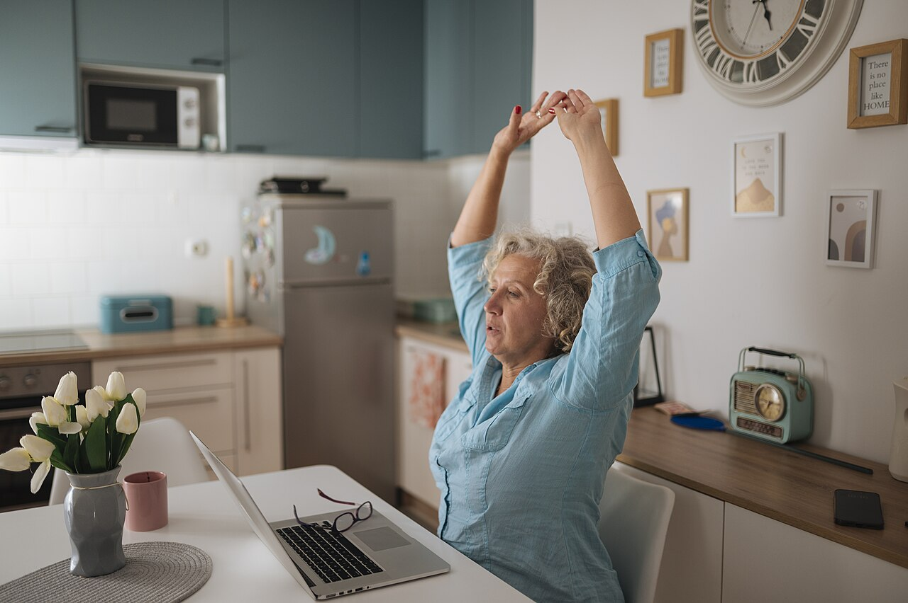

Beginner guide · 9 minutes
Movement breaks for desk workers: a beginner’s guide
A movement break does not have to become another workout on your list. It can simply be a short, deliberate change of position in the middle of a day that asks you to stay in one place.

One meeting ends. A new tab opens. A message arrives before you have stood up, looked away or noticed how long you have been in the same position. That pattern is ordinary. It does not mean you lack discipline, and it does not require an elaborate correction.
A movement break is one small way to place a pause inside that pattern. The aim is not to “undo” a desk job in sixty seconds. It is to make room for a different position, a few comfortable movements or a short walk, then return to the day.
What counts as a movement break?
For this guide, a movement break is a brief pause from desk-based work in which you intentionally change position or move in a manageable way. You might stand, walk to another room, shift between sitting and standing, roll your shoulders, reach your arms or simply stop looking at the screen for a moment.
It can happen beside the desk. It can be seated. It does not require a mat, special clothing, a fitness tracker or a particular level of flexibility. A break may last a minute; on a less crowded day, it may become a five- or ten-minute session.
The idea is consistent with workplace guidance from the U.S. National Institute for Occupational Safety and Health, which encourages regular breaks, changes in posture and periodic time away from screens and sitting. The CDC also publishes a workplace physical-activity break guide with ideas for short activity breaks. These are general public-health resources, not personal prescriptions.
Movement break, stretching session or workout?
These terms overlap, but they do not have to mean the same thing. Knowing the difference can prevent a one-minute pause from quietly turning into a plan you no longer have time to follow.
| Option | Main purpose | What it may look like |
|---|---|---|
| Movement break | Interrupt one position or task | Stand, walk, reach or change position briefly |
| Stretching session | Spend focused time exploring range or flexibility | A planned sequence for particular areas or the whole body |
| Workout | Train toward a broader fitness goal | A structured session with a defined level of effort |
A movement break does not replace the broader physical activity adults may need across a week. The World Health Organization’s guidelines address weekly physical activity and sedentary behaviour at a population level. A short desk break has a smaller job: it helps you put some movement back into a particular part of the workday.
When can a movement break fit?
There is no universal timer that suits every body, job or schedule. A customer-support shift, a design session and a morning of back-to-back calls create different possibilities. Instead of chasing a perfect interval, attach your first break to something that already happens.
- After a meeting ends and before the next tab opens.
- While a drink is brewing or lunch is warming.
- After submitting a task, sending a draft or finishing a call.
- When moving from focused work to email or messages.
- When you notice you have not changed position in a while.
Choose one cue, not five. The easier it is to notice, the less the habit depends on motivation. If the cue stops working, change it without treating that as failure.
A simple movement-break menu
This is a menu, not a sequence you must complete. Pick one or two options that fit the room, your clothing and how you feel today.
- Look farther away. Let your eyes leave the screen and settle on something across the room or outside.
- Change position. Stand if that is comfortable, or adjust how you are supported in the chair.
- Move what feels available. Try a gentle shoulder roll, an easy arm reach or a few unhurried steps.
- Use the room. Refill water, walk to a window or take the longer route back to the desk.
- Return without grading the break. A brief change still counts even if it did not feel dramatic.
If you prefer a guided option, the following five-minute video comes from Michigan State University Rehabilitation Medicine and is led by a physical therapist. It remains the creator’s work; HAVAN has not edited or re-uploaded it.
How to make the idea repeatable
Start smaller than your ideal routine
If the plan requires a mat, a change of clothes and fifteen empty minutes, it may not be a workday break at all. Begin with the version that still works on a crowded day. You can always continue when time and energy allow.
Keep choice limited
Save one short routine or write three easy options on a note. Searching for a new video every time introduces another decision at the exact moment you are trying to pause. HAVAN’s micro movement collection groups a few free starting points by time and setup.
Notice what makes a break harder
The barrier may be space, privacy, clothing, balance, an inflexible meeting culture or simply forgetting. Adjust the plan to the barrier. A seated option may be more realistic than standing; a walk to get water may feel more natural than following a video in a shared office.
Do not use intensity as the score
The break does not need to create a deep stretch or make you feel that you have exercised. Its value can be much quieter: you noticed the day, changed position and made returning to movement a little easier.
When general guidance is not enough
Stop if a movement causes pain, dizziness, numbness or another concerning symptom. If you have an injury, a medical condition, balance concerns or symptoms that persist, a qualified healthcare professional can help you decide what is appropriate for you. General web content cannot assess your individual situation.
Sources and editorial notes
- NIOSH: Working from Home—How to Optimize Your Work Environment and Stay Healthy
- CDC: Physical Activity Breaks for the Workplace—Resource Guide
- WHO Guidelines on Physical Activity and Sedentary Behaviour
Last reviewed November 6, 2026. HAVAN provides general educational information, not personal medical advice.